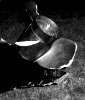

Cluff News First Anniversary
April marks the 1st anniversary for The Cluff Family Times. To celebrate we are having a fabulous, star-studded writing contest. As well as being published in the paper, we'll also be giving away a fantastic prize for the top article. The article should be fact-based, should not reveal any secret government slave trade scandals and should be chosen from one of the following four categories:
1. My Favorite Aunt
2. My Favorite Sister
3. My Favorite Daughter
4. My Favorite Holiday with the Cluffs
Send your entries to Daisha at: info@tuffcluff.com and GOOD LUCK!
Natasha Flees Seattle
After being snowed and iced in for several weeks following a major power outage in Seattle, Natasha has finally decided to swap deep-freeze for palm trees by moving to Southern California. Tasha has lived in Seattle for well over a decade and her boyfriend, Steve, has lived there all his life. Both were working for Microsoft but ready for a change. Steve decided to look for a new job and interviewed in Honolulu and San Diego before opting for the latter as a game designer for Sony. Natasha couldn't be happier, "The weather is nice, the beach is fun and finally I live in a place where people drive like me...fast and aggressive! We got memberships to the zoo and wildlife park as well as Seaworld - so that should keep us occupied for a while." Steve, Tasha and Cage are currently living in company housing in Del Mar until they find a place of their own - hopefully with a pool.
Johnson's Country Retreat
This month Tiana and Hyrum Johnson are settling into their new home in Gold Hill. Set at the edge of a forest, their house boasts beautiful panoramic views of the entire Rogue Valley. Heavily pregnant Tiana has worked day and night painting and decorating to get the house in order before the arrival of their first child. The new house is a big improvement on the on the temporary accommodations (living in a 5th wheel on Tiana's parent's property) the Johnson's had to put up with while their land was being prepared. "We're really excited!" says Tiana. "It looks so different up there, you'd hardly recognize it. We cut back the hill and made a couple of terraces on it. The view is amazing! We can see clear to Pilot Rock from our house."
Shira the Nomad
For the past year, 19 year old Shira Cluff has moved, on average, 17 times every month. So it will come as no surprise that she's moved again. This time she's settled into Tiana and Hyrum's quiet, mountain-side home - but only temporarily. Shira's been trying her hand at painting and decorating as she helps Tiana put the finishing touches on the new home, but if the gig as interior designer doesn't pan out, perhaps nomadic goat herding might be worth a try.
Baby Girl on Standby
After her latest ultrasound, heavily pregnant Natasha seems fairly certain that her second child will be a baby girl. She is due at the end of July and is planning to go the more natural route with a midwife and a water birth at a birthing center.
Puppies Fetch
Piles of Cash Hyrum and Tiana's latest batch of min-pin puppies have managed to fetch about $600 each. People love the puppies because they are adorable and pocket-sized, but they buy the puppies because they are litter-box trained!
Hyrum and Tiana's latest batch of min-pin puppies have managed to fetch about $600 each. People love the puppies because they are adorable and pocket-sized, but they buy the puppies because they are litter-box trained!
Bart's Birthday
The Cluffs made their annual trek to the graveside of their beloved son and brother, Barten, who would have been 40 this April. At the site, the cherry trees had just finished blooming. After visiting the cemetery, a traditional buffet lunch followed. Of the meal Diana says, "I gained 7 pounds! That is why I don't like to go out to eat. Only fast-day helps me get some of the weight off and to remember to stay in control."
Busted!
Dallas, age 12, now wears size 34 in men's pants. Both he and his twin, Weston, are now wearing 15 to 15½ shirts. All of this is baffling to their poor mother. "I just bought them new Sunday shirts," says a bewildered Diana "and now I have to buy some more. They are like 'The Hulk' about to tear open at the seams of their shirts." No one knows when the madness will stop, but for now the twins seem stubbornly determined to continue growing.
Nothing New
Weston has once again narrowly escaped being flattened by a semi truck. Like last time, he was riding his bike when the offending vehicle attacked. This time though, in order to avoid being hit, Weston had to force himself to crash on to the side of the road. "This has happened twice," says his frazzled mother, Diana. "This time he came home hurt and skinned, he had his ankle all wrapped up and said he thought it was broken. He said he is glad he's alive. I told him no more riding his bike to school, but when I went to the Temple yesterday the boys rode all over town on their bikes and didn't tell me of the near death experience they probably had."
Freak Coincidences
This month Weston crashed his bike and thought his ankle was broken, last month Dallas thought his hand was broken - are these just freak coincidences, or is there something spookier going on here?! The Twin's freaked out mother, Diana, believes the latter. "Twins have so many of the same accidents," she says "it must be more than just coincidence." If Diana's theory on synchronized accidents among twins is correct, then why did only one of them used to wet the bed?
|
|
WELCOME TO NEW BABY GIRL: Talea Lila!!
 On May 4th a beautiful, tiny new TuffCluff was born. Despite being two weeks premature and only 5lbs, little Talea (pronounced Tah-lee-ah) was in perfect condition. She was so beautiful, in fact, that the alien/demon baby rumors (see Fall 2003 edition) were immediately put to rest. Though Tiana's pregnacy was fairly smooth, her labor was not. First-time parents, Tiana and Hyrum admit that there were a few complications to the birth. "She was two weeks early," Hyrum says "because Tiana was getting a case of toxemia which was causing her blood pressure to rise and the only cure was to have the baby. The doc gave her a pill to induce labor and her body took over from there. From the first contraction to birth was about nine hours." At three in morning everything was over and baby Talea was finally in her parent's arms. Tiana and Hyrum couldn't be happier. "She's as cute as a bug!!!" exclaims proud papa, Hyrum. On May 4th a beautiful, tiny new TuffCluff was born. Despite being two weeks premature and only 5lbs, little Talea (pronounced Tah-lee-ah) was in perfect condition. She was so beautiful, in fact, that the alien/demon baby rumors (see Fall 2003 edition) were immediately put to rest. Though Tiana's pregnacy was fairly smooth, her labor was not. First-time parents, Tiana and Hyrum admit that there were a few complications to the birth. "She was two weeks early," Hyrum says "because Tiana was getting a case of toxemia which was causing her blood pressure to rise and the only cure was to have the baby. The doc gave her a pill to induce labor and her body took over from there. From the first contraction to birth was about nine hours." At three in morning everything was over and baby Talea was finally in her parent's arms. Tiana and Hyrum couldn't be happier. "She's as cute as a bug!!!" exclaims proud papa, Hyrum.
Weenies Make a Come Back
After a recent trip to Georgia, Diana was inspired to resurrect a linguistic tradition that has long since disappeared in the West. "In the South they have stores named Piggly Wiggly and other funny names," she exclaims, clearly enchanted by it all. "They also call hot dogs 'weenies'! That's what we used to call them in the 40's and 50's. So I've decided changed our "hot dog" roasts to "weenie" roasts. When I told my boys, they just started laughing their heads off. Dallas says he doesn't think 'weenie' is a good name these days, in the same way that saying 'I'm feeling gay' has a different meaning today. We were dying to try out our new weenie roast out so we built a big fire last week and bought everything for the weenie roast, but then realized that we'd forgotten the weenies! So Dad made turkey burgers instead, which we ate on our weenie buns."
Twin Day
Ashland middle school, in an attempt to help small groups of 'outcasts' or 'freaks' feel well-adjusted, has introduced special theme/awareness days throughout the year. Last week it was 'Twin Day' and twins Dallas and Weston went to school dressed and groomed as exact copies of one another (even though Dallas initially resisted). When asked if they felt more awareness had been drawn to their difficult plight in life they replied, "No. Who cares? Wanna see Weston do a dive-roll off the chicken coop?"
The Cluffs Are Alive With The Sound Of Music!
 All across the US this year, from Georgia to California to Oregon, The Cluffs have come alive with melody, rhythm and rhyme. Here is just a small sample of the musical talent on offer from the Cluff gene pool. All across the US this year, from Georgia to California to Oregon, The Cluffs have come alive with melody, rhythm and rhyme. Here is just a small sample of the musical talent on offer from the Cluff gene pool.
Coquille Kids Three of Dane & Karen's five children have decided to pull an Osmond and start a family band. For years they've been signing together, developing their sound, but it wasn't until last winter that things really got going. "It all started at Christmas," says 14 year old Kaylynn. "I got a keyboard, Ammon got a bass and Bug got a drum set!" Kevin, local guitar player and family friend, heard about the new acquisitions and offered to teach 15 year old Ammon a thing or two about guitars. The Cluff kids began practising in earnest and really started getting good. Then suddenly they had a brilliant idea--they'd form their own band! "I hope we get famous with our band," says vivacious Kaylynn. "That would be awesome!" But "the band" is still in the planning stages and not quite a reality at this point. "Ammz, Dinky and Bug love to play their instruments," says their mother, Karen, "but don't have a band, like they are telling everyone. Maybe someday they will actually form it, but for now they are learning the basics and having so much fun. They are great and sound like they have played for years." But the Cluff kids aren't the only musical talent in the family. Karen has just started teaching piano from her Coquille home and already has two students. "I do love teaching piano," she says contentedly.
Cluff Barn Boyz After hearing about the kid's in Coquille, Grandparents Dennis and Diana Cluff soon bought a set of instruments for their own boys to set up a rival band. "Last night we gave the boys a treat for being righteous," says uncommonly pious mother of ten, Diana. "They don't fight, cuss, or kiss girls. They live the gospel with joy, attend to all their duties in church, stay away from drugs, sex, dishonesty, lying, cheating and stealing, as well as read their scriptures daily and pray morning and night. In addition, they spend hours in weekly service to others and in obeying us. As a reward for being what we always hoped they would be, defenders of the faith and keeping our family name in righteous regard by behaving themselves and living truth, we rewarded them with a drum set, two electric guitars with amplifiers and a microphone to sing in." With the addition of the new instruments (and amplifiers) the Cluff house, which had always been unbearably noisy, took noise pollution to a whole new level. Diana's "reward for righteousness" turned out to be a devilish racket. Luckily the shop office happened to be unoccupied so the boys moved their band to the barn. "I hope our renters don't mind," Diana says whilst removing her industrial ear plugs, "but something had to be done." The boys, who are all classically trained violinists, have had to start from scratch musically, but have had books, tapes and drummer brother-in-law Hyrum to help give them pointers. "I hope the boys set some truths to music," Diana says optimistically, "like a song that says, 'DID YOU ALL HEAR WHAT MOMMA SAID?' to help to get rebellious teenagers to mind their parents. And I also hope the next time we get together with Dane's family we can combine music and song and express the Cluff' beat!" We'll be watching the billboard charts for the "righteous brother's" new hit!
Shira's Song Shira has started taking voice lessons in Ashland. She has a great voice and everyone is looking forward to her debut.
Classical Kira Kirianna Beal is fast becoming a master of the violin. She's just triumphantly pulled off another great recital and is still only five years old!
Cage Can Play Cage Cluff, only nine years old, is so good at the piano that she's already learned Beethoven's Fur Elise (the Vince Guaraldi arrangement)!
This new section of The Cluff Family Times is dedicated to untangling misinterpretations, fixing misunderstandings and taming wild rumours that may occur as a result of unclear communication between TuffCluffs. The truth will triumph!
"Hoppy Darn"
Would you believe...it wasn't until she was an adult that Daisha discovered that when her father said "hoppy darn" what he was actually saying was "I'll be darned"? Another crazy Cluff misunderstanding!
Jo-Jaw
Dennis and Diana have recently returned from a week long trip to visit Melanie, Scott and their new baby Joseph in Georgia. While in the South Diana seems have become obsessed with "weenie" roasts (see Weenies make a Comeback above).
Diana's Tips for Travelers
"I hope all our Tuff Cluffs keep their 72 hours kits for all the strange storms we run into these days," says Diana Cluff, expert in preparing for every eventuality. "In each of our cars I always keep coats, sleeping bags, pillows, food (like tuna, peanut butter, crackers, raisins and cookies), lots of water and plastic bottles or bags with tissue to use for going to the bathroom." Aside from a can opener for the tuna and that fact that you may not have room for people in your car with a kit of this size, the only worrying tip is using "a bag" to relieve yourself! Not only does this seem very unstable, it just seems wrong! UGH!
Boating Disasters
Late last summer Dennis and Diana got a new Bayliner. The first time they took it out, they only went 100 yards before slamming into a pile of rocks and trashing the propeller. They had it repaired but didn't get an opportunity to take it out again until last month. When they did, they couldn't get it started, that is, until after consulting the instructions. Problem solved, they took off with their boys in tow on knee boards behind them. But with the initial accident fresh on her mind, Diana couldn't stop worrying. "When he's pulling the boys, Dad looks at them for long periods of time instead of looking where he's going," she says. "It stresses me out. I yelled when Dad almost hit the shore. That was ok because when we went to the dock, he accidentally hit reverse and rammed into a boat behind us. Now Nial's back is hurting because he put his legs out to save the other boat as we were all screaming. Dad made me drive after that, as I was the most scared and saying things to him." The Cluff's next boating adventure involved running out of gas in the middle of the lake, getting towed by the aquatic police and failing a random safety-kit check due to lack of a buoy - hard to believe given Diana's unprecedented levels of emergency preparedness. If Cluff boating history is anything to go by, their next outing is sure to contain at least one of the following: sinking, fire, fatal collision or loss of limb. Check back in the next edition of The Times for a full report.
Poison Oaking Dallas, Weston and Nial camped on Grizzly Peak last weekend then hiked down 13 miles through poison oak. When they got home they showered then went straight off to the pear farm to help with a youth service project. "They were dead tired as we drove home from the farm," says their mother. "I was proud of them for serving when dead tired and bought them a package of 36 fudgesicles to thank them for being so faithful."
Dallas, Weston and Nial camped on Grizzly Peak last weekend then hiked down 13 miles through poison oak. When they got home they showered then went straight off to the pear farm to help with a youth service project. "They were dead tired as we drove home from the farm," says their mother. "I was proud of them for serving when dead tired and bought them a package of 36 fudgesicles to thank them for being so faithful."
A Fowl Experiment Throughout Cluff history there have been countless attempts at keeping a mini-chicken farm. The results are always the same, a quick and violent end via one of the three deadly afflictions that plague the coop; racoons, angry neighbors with bee-bee guns (usually aimed at the roosters) and toxic kitchen scraps - affectionately known in the Cluff household as "mulch". Though doomed to failure, each Spring the Cluffs press forward with their hopeless endeavor. This year amateur chicken farmer, Dennis, is attacking the chicken problems with renewed vigor; he's reinforced the chicken-run with racoon-proof wire, unblocked the watering feature, installed a grain feeder (thus eliminating mulch hazards) and installed several new nest boxes - optimistic that the chickens will live long enough to reproduce this time. Dennis has also purchased 24 baby chicks including Rhode Island reds, black sex links, aracanas, a mystery breed (just to keep things interesting) and even a couple of turkey chicks. The Cluff Family Times will be keeping tabs on the chicken experiment of 2004, so keep checking back for the latest news and gossip in the "Chicken Count" section of forthcoming issues.
Throughout Cluff history there have been countless attempts at keeping a mini-chicken farm. The results are always the same, a quick and violent end via one of the three deadly afflictions that plague the coop; racoons, angry neighbors with bee-bee guns (usually aimed at the roosters) and toxic kitchen scraps - affectionately known in the Cluff household as "mulch". Though doomed to failure, each Spring the Cluffs press forward with their hopeless endeavor. This year amateur chicken farmer, Dennis, is attacking the chicken problems with renewed vigor; he's reinforced the chicken-run with racoon-proof wire, unblocked the watering feature, installed a grain feeder (thus eliminating mulch hazards) and installed several new nest boxes - optimistic that the chickens will live long enough to reproduce this time. Dennis has also purchased 24 baby chicks including Rhode Island reds, black sex links, aracanas, a mystery breed (just to keep things interesting) and even a couple of turkey chicks. The Cluff Family Times will be keeping tabs on the chicken experiment of 2004, so keep checking back for the latest news and gossip in the "Chicken Count" section of forthcoming issues.
Spring Crop Update by Dennis
We have had a most wonderfully mild spring. Everything is growing like crazy. The daffodils and tulips are gone and the fruit trees are finished with their blooming now. The almonds, plums, apricots, nectarines, peaches, pears, cherries and apples were very pretty in bloom. Black and English Walnuts, Pecans and Hazelnuts are going like crazy too. The grapes and strawberries, raspberries, blueberries and lingonberries are in full bloom right now too. I planted 13 tomato plants in March under "wall-of-water" units and they are all about 12 inches in height now and climbing out of the top of the protection - we still have a month or so of frost potential yet. Here is what is growing in our garden boxes: broccoli (three plantings), red and green cabbage, brussel sprouts, kale, bok-choy, five kinds of lettuce, spinach, potatoes, three kinds of onions, two kinds of chard, carrots, beets, red and white radishes, peas, artichokes, rhubarb and the herbs; oregano, sage, thyme, rosemary, parsley, cilantro and basil. To go (waiting warm weather) we have watermelon, cantaloupe, two kinds of cucumbers, summer and winter squash and we plan to have a large pumpkin patch from seeds we got from the neighbors. I also hope to try for some parsnips this year too. We put in the first planting of Corn on Melanie's birthday (mid-April) as usual. It should be a great season.
|
|
Bargain Hunting Turns up Junk
 Diana is, and always has been, the chief of cheap, the cardinal of cast-offs, the goddess of Goodwill, the queen of the junk pile. But are her days numbered? For years she's scoured the second-hand underworld from thrift stores to garage sales, flea markets to lost 'n' founds looking for that one-of-a-kind treasure. And she's done pretty well for herself, if the bulging barn and her colossus-of-a-closet are anything to go by. In her closet massive piles of booty, from negligées to costume jewellery and shoulder pads, are stored in quantities vast enough to make even Elton John blush. Still, things generally seem to work out okay - but lately things have gotten worse. Suddenly items from 'The Babcock' that used to be shunned have been readily accepted and even incorporated into the family food supply!! But even more disturbingly, she's been frequenting the salvage center. The salvage center, for those who don't know, is the place where things that are too nasty, too broken or too disgusting for even the Salvation Army go to die. The other day Diana came back with a "find" from this den of iniquity. "I bought a $3.00 vacuum at the salvage center in Medford," she says with a mixture of triumph and trepidation. "It runs well for a time then the belt comes off and it starts emitting big, black clouds that smell of burning rubber and leave permanent marks on the furniture after they settle." Diana's son, 12 year old Weston, struggles to speak - he has recently acquired a mysterious breathing problem. "It fills the house with this thick, black junk," he wheezes. "It smells like the lawn mower when we do wheelies in the shop parking lot - and sometimes it smells like burning dog hair. Dallas thinks there's a human head in the vacuum bag." But Diana just laughs away these suspicions. "I guess I will have to breakdown and buy a new one at Wal-Mart soon," she says. "But only if it's on sale!"
Diana is, and always has been, the chief of cheap, the cardinal of cast-offs, the goddess of Goodwill, the queen of the junk pile. But are her days numbered? For years she's scoured the second-hand underworld from thrift stores to garage sales, flea markets to lost 'n' founds looking for that one-of-a-kind treasure. And she's done pretty well for herself, if the bulging barn and her colossus-of-a-closet are anything to go by. In her closet massive piles of booty, from negligées to costume jewellery and shoulder pads, are stored in quantities vast enough to make even Elton John blush. Still, things generally seem to work out okay - but lately things have gotten worse. Suddenly items from 'The Babcock' that used to be shunned have been readily accepted and even incorporated into the family food supply!! But even more disturbingly, she's been frequenting the salvage center. The salvage center, for those who don't know, is the place where things that are too nasty, too broken or too disgusting for even the Salvation Army go to die. The other day Diana came back with a "find" from this den of iniquity. "I bought a $3.00 vacuum at the salvage center in Medford," she says with a mixture of triumph and trepidation. "It runs well for a time then the belt comes off and it starts emitting big, black clouds that smell of burning rubber and leave permanent marks on the furniture after they settle." Diana's son, 12 year old Weston, struggles to speak - he has recently acquired a mysterious breathing problem. "It fills the house with this thick, black junk," he wheezes. "It smells like the lawn mower when we do wheelies in the shop parking lot - and sometimes it smells like burning dog hair. Dallas thinks there's a human head in the vacuum bag." But Diana just laughs away these suspicions. "I guess I will have to breakdown and buy a new one at Wal-Mart soon," she says. "But only if it's on sale!"
Weston Shuns Sexual Advances
Weston, age 12, was excited to find that he'd won a part in the school play, that is, until he discovered that he was scripted to be on the receiving end of a kiss. Secretly, he came up with a clever plan to get around the moment that might compromise his virtue. He worked on the intricacies of his tactics day and night until, finally, he knew he was ready. On the big night, at the critical moment he sprung his genius plan; he dodged! The oncoming kiss went wide. His chastity was spared! His cheek remained unmolested! Anti-kiss campaigning mother of ten, Diana, is thrilled. "He will get a prize for not kissing," she says whilst showering her defender-of-the-faith with consolation kisses.
Sleeping Deck
When the Cluff house got an external makeover last winter, Dennis and Diana had a large, new sliding glass door put into their bedroom. When it was finished Dennis and the boys set to work building a new deck for their new exit. The moment the last nail went in, Diana suddenly exclaimed that she intended to spend 9 months of the year sleeping outdoors and then proceeded to drag vast piles of bedding out onto the deck. "The sky is my favorite thing in nature to look at," says Diana as she plucks a black beetle from her hair. "Dad and I love sleeping outside, even though we are awakened by light drops of rain from time to time." But that's not the only thing keeping them awake, "We love watching the moon and the stars. Sometimes when the moon is full I can't sleep all night because I love looking at the sky so much." Nial thinks it's all nuts, "When mom gets up in the morning she has dying mosquitoes and bits of wildlife stuck to her - they get stuck in the Vaseline she uses on her face. It's GROSS!" But sleepless nights, periodic downpours and vermin infestations aren't enough to deter Diana, who swears she'll keep sleeping outdoors until the first snow or the mountain lions drag her off kicking and screaming into the night, which ever comes first.
The Wheels Are Turning
When Dennis Cluff kindly agreed to take over his wife's Meals on Wheels route last month, he didn't quite realize what a shambles the system was in. Finding the charts a complete mess, Dennis immediately set to work improving and revising the paperwork. An organized, efficient and simplified version of the paperwork was the end product of all his work. "People couldn't believe it!" says proud wife, Diana. "It is the best chart yet for Meals on Wheels. I hope they change to Dad's style. Dad is really extra, extra good at paperwork and organization."
Shop Rental
The Cluff barn has been partially rented out, but the arrangement isn't expected to last due to Dallas, Weston and Nial's new "band" being moved into the shop office to save their mother's dwindling hearing (see 'The Cluffs are Alive With the Sound of Music').
Mom Prepares Eulogy
Diana Cluff, age 59, feels her life has gone by quickly. "Life goes at warp speed," she muses. "It feels like Dad and I have only been married for ten years now as I look back, and I am shocked when I look in the mirror and see a grandmother staring back at me. I still feel the same as when we got married. But my body, which I thought inspired my man to marry me, has bit the dust." The prospect of turning 60 next year has inspired Diana to prepare for her own funeral. "If people speak over me when I have finally dropped dead from all the work," she says joyfully, "they can say I always kept up on my laundry and canning and did my mending as I watched TV and when I rode in the car. They can say I made thousands of loaves of round bread and scones and made home-cooked meals that were on time with a fun atmosphere. They might mention the massive daily house, yard, car, and barn cleaning with every family member working at warp speed. They can say I was a sewing freak, making girl clothes so my daughters and I would have dresses that looked alike and even sewing a suit for Dad! I always remembered to take the children fishing, swimming, boating, to the park, to the dollar movies (if the movie was rated G) as well as other 'dates'. On the yard work, I have been tricky and planted all kinds of evergreen things that would kill weeds like ivy, yucca, myrtle, bamboo, cedar trees, ponds, bulbs that sprung up and more so I wouldn't have to work in our huge yard all day, but it would still look landscaped."
White Elephant Contest It may only be Spring but it's not too early to start preparing for the hunt - White Elephant season is just around the corner! It's a long-standing Cluff family tradition to have a White Elephant party every year. Last year Diana came up with the most unique W.E. - a deluxe toilet paper holder with an in-built radio, flower vase and (best of all) a red-button alarm system with a police siren for toilet emergencies! This Christmas season The Cluff Family Times is getting in on the act and will be sponsoring our FIRST EVER "White Elephant Contest". The stakes are high with cool prizes up for grabs and an article on the grand prize winner and their "find". So, the pressure is on to find the most unique/disgusting/hilarious white elephant ever. With past goodies including mom's hairballs, a baggie of budgie excrement and a disposable speculum (found in the Cluff medicine cabinet) it will be difficult to beat, but those who persevere will be rewarded. So get out there and find something crazy! Please report your white elephants to: info@tuffcluff.com
It may only be Spring but it's not too early to start preparing for the hunt - White Elephant season is just around the corner! It's a long-standing Cluff family tradition to have a White Elephant party every year. Last year Diana came up with the most unique W.E. - a deluxe toilet paper holder with an in-built radio, flower vase and (best of all) a red-button alarm system with a police siren for toilet emergencies! This Christmas season The Cluff Family Times is getting in on the act and will be sponsoring our FIRST EVER "White Elephant Contest". The stakes are high with cool prizes up for grabs and an article on the grand prize winner and their "find". So, the pressure is on to find the most unique/disgusting/hilarious white elephant ever. With past goodies including mom's hairballs, a baggie of budgie excrement and a disposable speculum (found in the Cluff medicine cabinet) it will be difficult to beat, but those who persevere will be rewarded. So get out there and find something crazy! Please report your white elephants to: info@tuffcluff.com
 A Stupid Joke
Q. Why are seagulls called seagulls?
A Stupid Joke
Q. Why are seagulls called seagulls?
A. Because if they flew over the bay, they'd be called bagels!
|